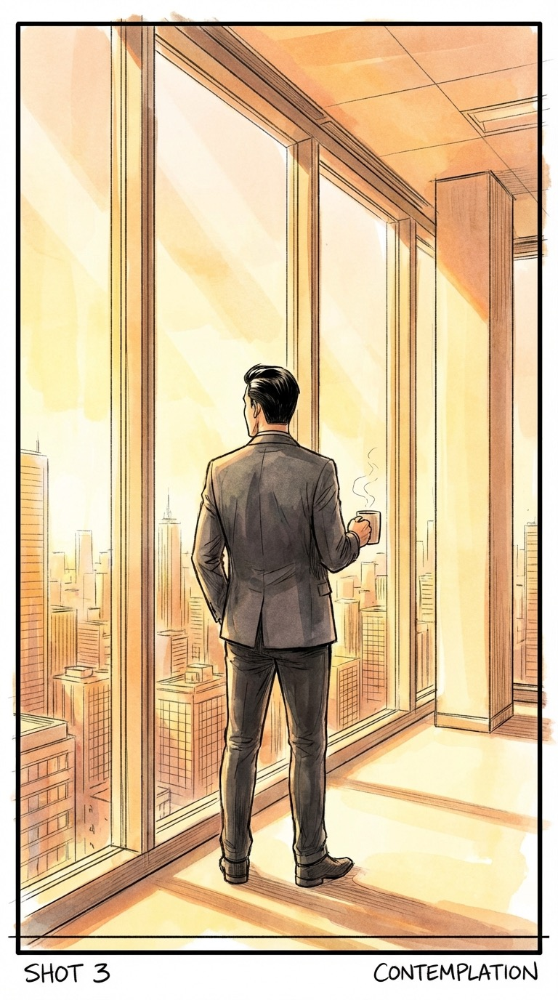
又一个投资人跑了。这已经是这个月第三个。
我端着咖啡看着楼下车流，心里盘算着公司账上还能撑多久。
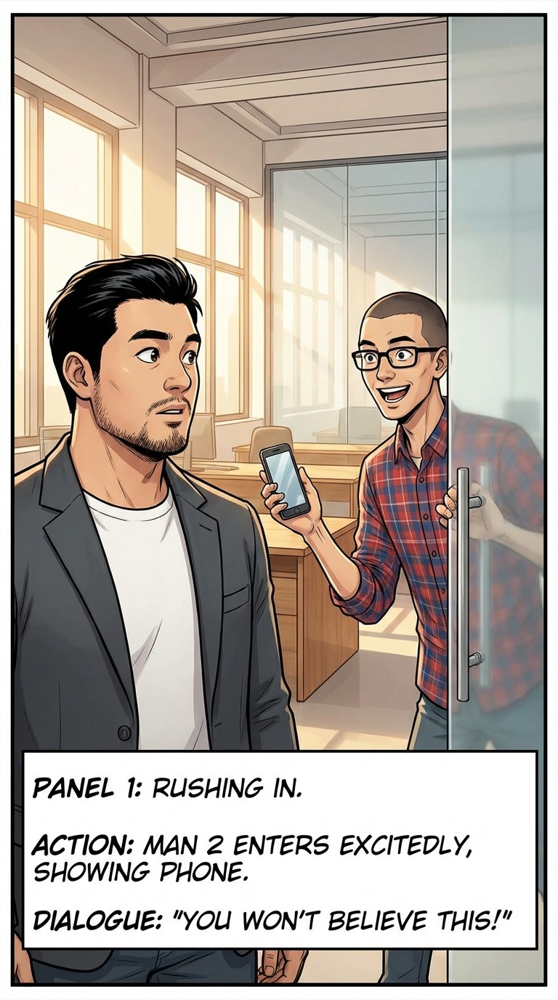
小林："江哥！陈锋投资那边……他助理刚打来电话，说今晚要请你吃饭，聊聊B轮的事。"
我心里一动。陈锋？赛盈资本的陈锋？传说中那个从来不看AI项目的陈锋？
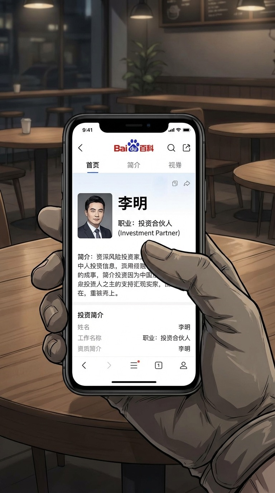
陈锋，赛盈资本创始合伙人。早年做德州扑克职业选手，后转型投资，以"从不失手"著称。
我搜了一圈，这人投的项目确实没有赔过。但直觉告诉我——这世上没有"从不失手"的人。
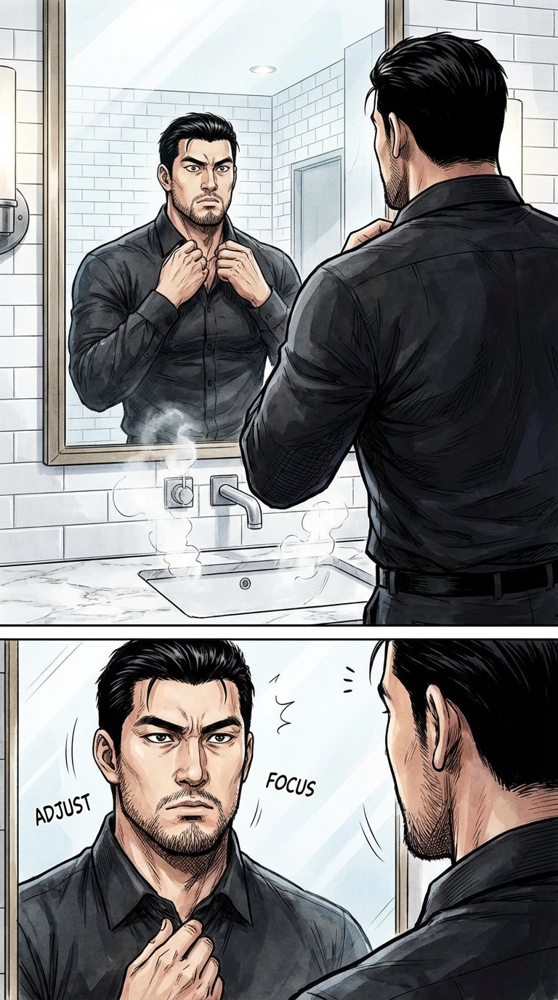
换衬衫的时候我跟自己说：平常心。就是一顿饭，谈不成也不亏。
但手指系扣子的时候还是有点抖。三个月了，如果再拿不到钱……
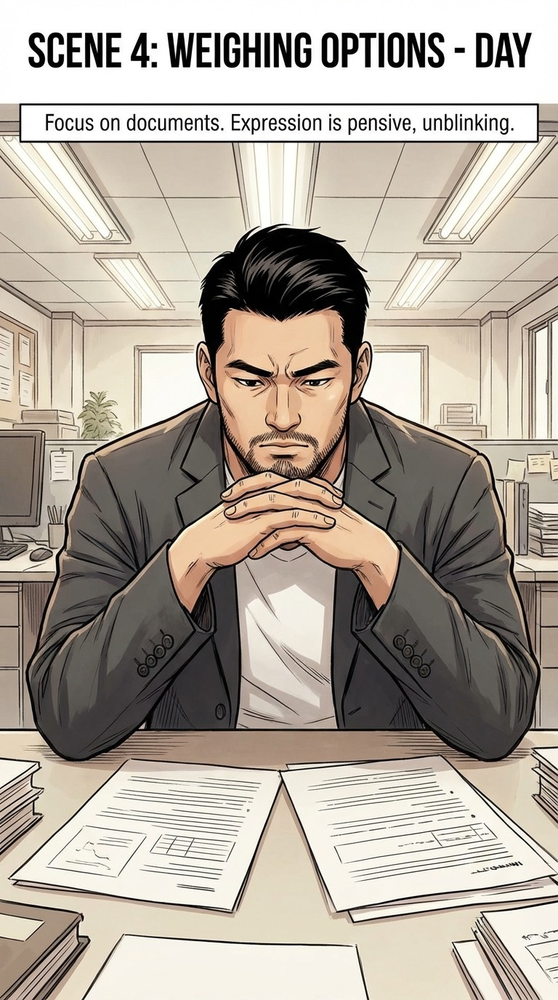
小林建议我带上完整的商业计划书和财务模型，全套。但我犹豫了。
带全套＝把底牌全亮出来。我选择只带一页纸的产品演示——如果他真有兴趣，一页纸就够。如果他没兴趣，带再多也白搭。
黑客原则第一条：在没搞清系统架构前，不要暴露自己的payload。
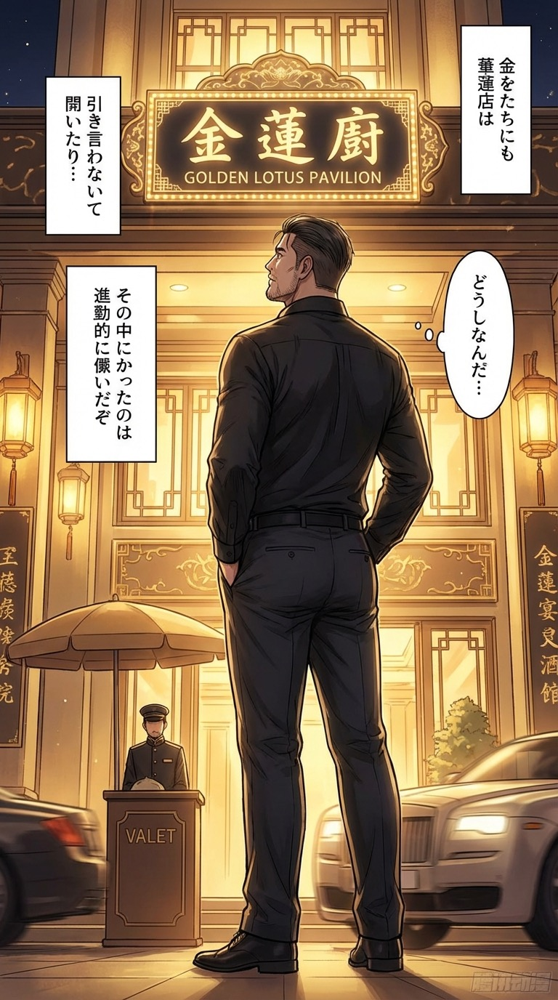
餐厅在外滩边上，光门口的花就够我付一个月工资。
我深吸一口气走进去。装什么装，你连996都扛过来了，还怕吃顿饭？
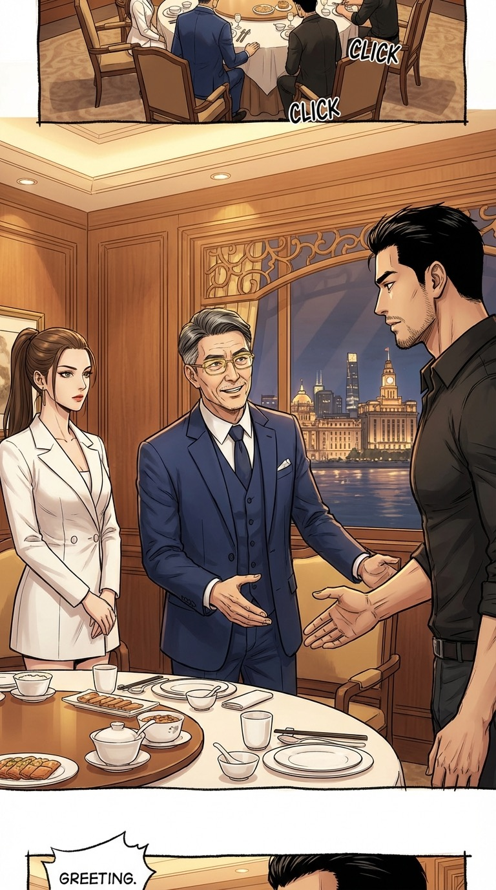
陈锋："朱总！久仰久仰，来来来，坐。"
他的笑容很标准，标准到让我警觉——做安全的人对"太完美"的东西天然敏感。
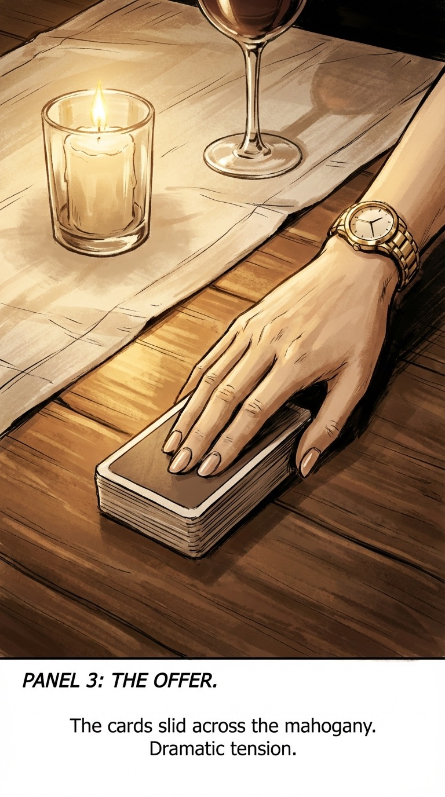
陈锋："聊投资太无聊了，先来一把？我年轻时候的老习惯，饭前先摸两把牌，活络活络。"
我笑了笑，心想：好家伙，这就来了？
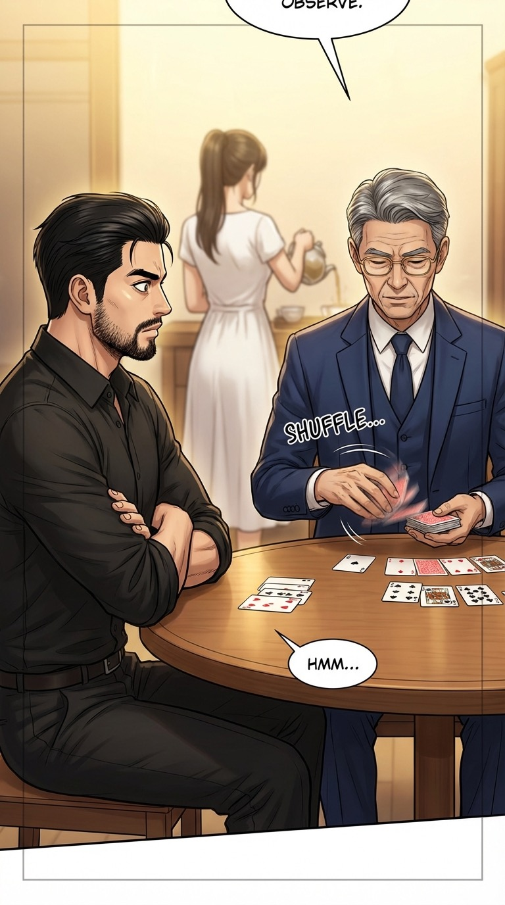
他洗牌的手法太流畅了。不是偶尔玩玩的人，这是肌肉记忆。
我脑子里开始自动拆解——这是荷官级别的手速。"老习惯"？呵。
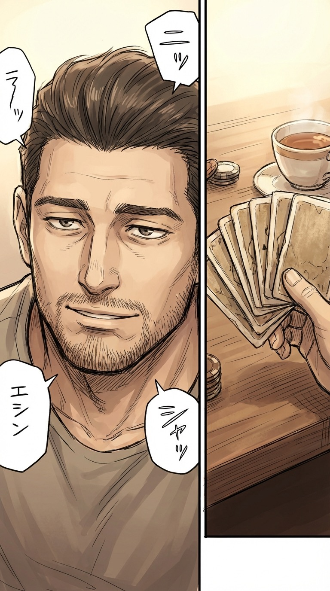
直觉告诉我这牌局有猫腻。但我没拒绝——
黑客原则第二条：想搞清楚陷阱怎么运作，最好的办法是踩进去看看。但你得确保自己有后门可以跑。
我的后门是什么？我扫了一眼手机——小林那边随时待命。够了。
我："行，切磋切磋。不过我手臭，先说好，输了可不算投资的账。"
陈锋笑："当然当然，就是玩玩。"
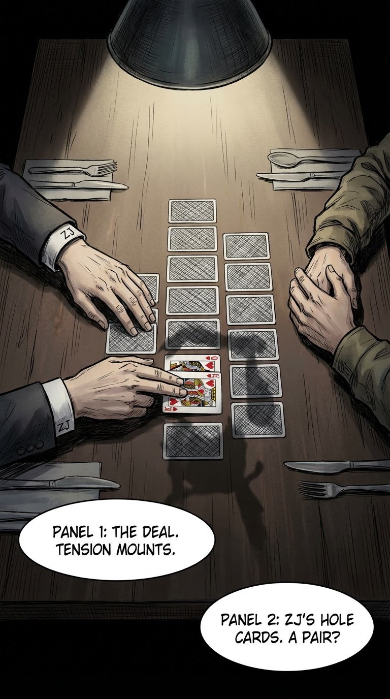
第一把，德州扑克。他开了个不大不小的局，底注1000。
"就是玩玩"——底注1000的"玩玩"。我翻开底牌：一对7。不算好也不算差。
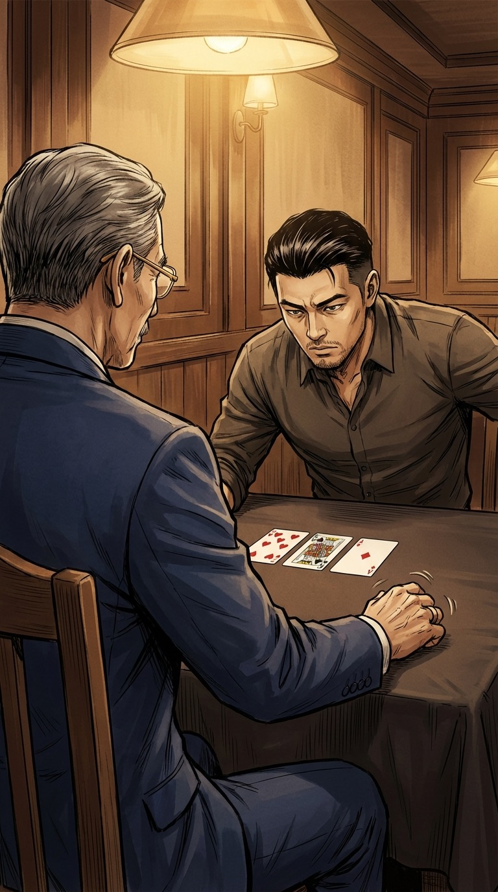
翻牌：7-K-A。三条7。
我面无表情，心里却在狂喜——等等。这手牌也太好了。
做安全的人有个直觉：当一切看起来太顺利的时候，你大概率正在被社会工程学攻击。
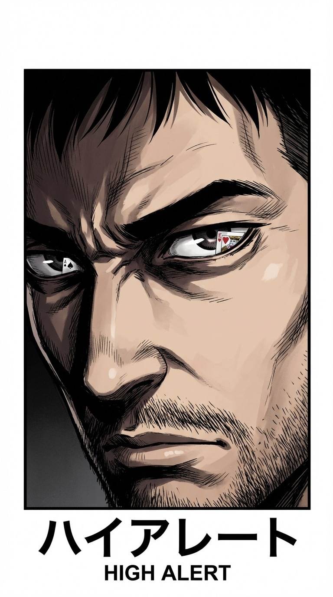
我开始数牌。不是数我手里的——是数他洗牌时候的动作记忆。
每一次切牌的位置、力度、角度……我在脑子里回放刚才的画面。逆向工程的习惯。
然后我发现了一个微小的——但是致命的——不一致。
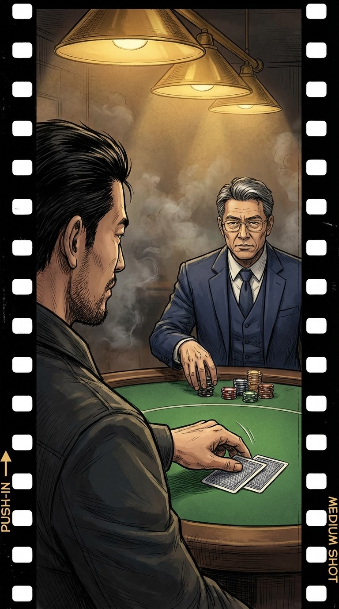
我把牌一扣。
我："陈总，这副牌有意思。"
陈锋手一顿，笑容不变。
陈锋："怎么说？"
我："您洗牌的时候，第三次切牌切在了和第一次完全相同的位置。对于普通人来说这是巧合。但对一个'老习惯'来说——这是控牌。"
空气突然安静了两秒。赵媛端茶的手微微一抖。
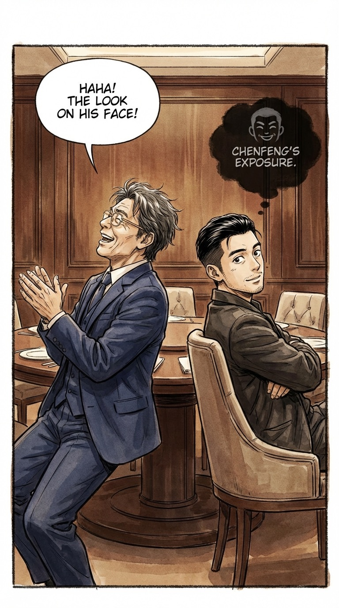
陈锋突然哈哈大笑："好！好！朱总果然不是一般人！三年了，你是第一个在第一把就看出来的！"
我心里反而更警惕了。他笑得太真诚了。被拆穿还这么高兴——要么是真欣赏我，要么是这本来就是测试的一部分。
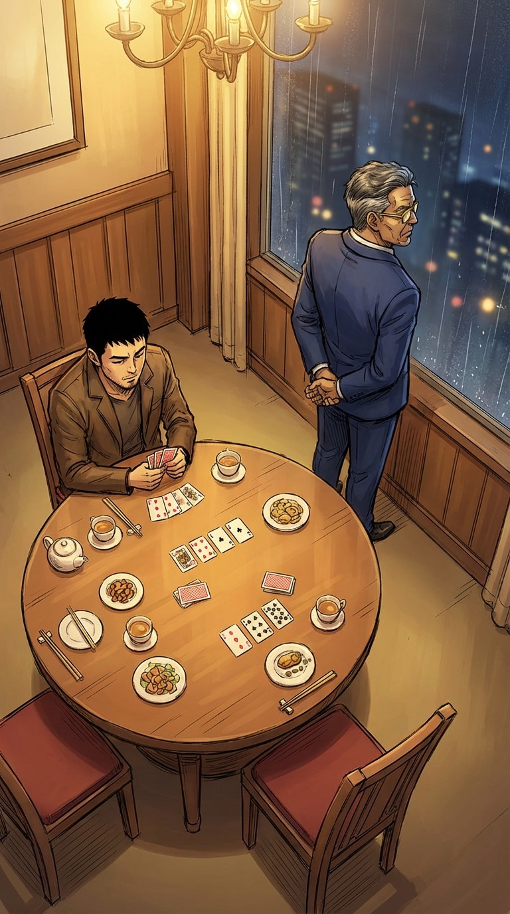
陈锋："我投的不是项目。我投的是人。刚才那把牌，是我面试创始人的方式。能在控牌局里第一手就识破的人——这种人做AI产品，我放心。"
好家伙。这场饭局，从我进门那一刻起就是一场精心设计的"渗透测试"。
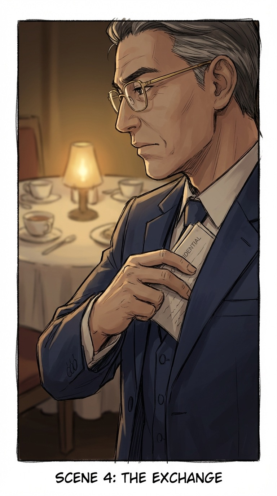
陈锋："B轮，5000万美金。但有个条件。"
5000万。够我们跑两年的。我尽量让自己的手不发抖。
我："什么条件？"
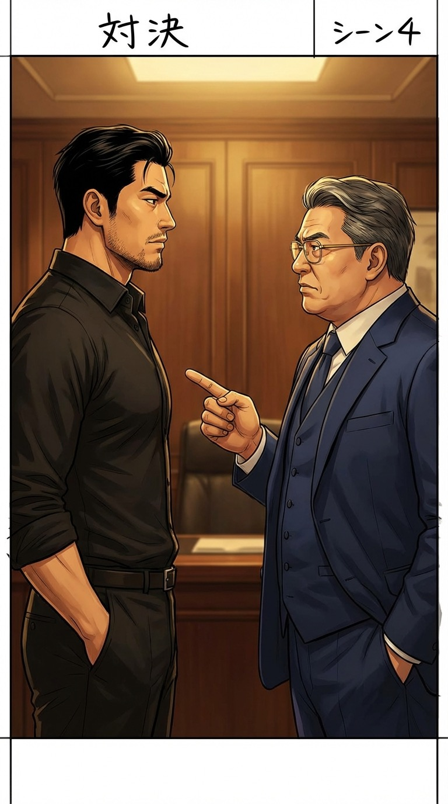
陈锋："下周有一场局。不是扑克——是商业博弈实战。十二个创始人参加，淘汰制。最后活下来的那个，拿走全部投资额度。不是5000万——是3个亿。"
三个亿。我的大脑瞬间算出了这个数字意味着什么——足够我们做到行业第一。
但同时另一个声音在说：一场"淘汰制商业博弈"？这听起来像个大型密室逃脱和赌局的混合体。其他十一个创始人是谁？规则是什么？
我看着陈锋的眼睛。他很认真。这不是开玩笑。
我深吸一口气："几点到？"
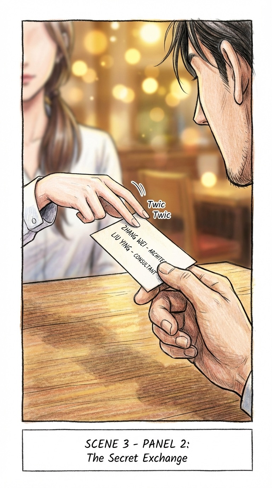
赵媛递给我一张名片。就在名片换手的瞬间，她的食指在名片背面点了两下。
很轻，很快。如果不是我做安全出身，大概不会注意到——这是一个信号。什么信号？给谁的？
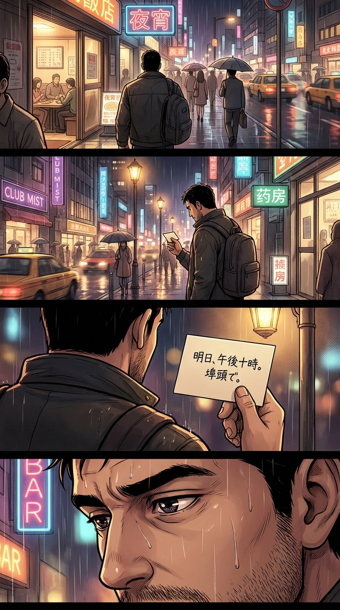
回到车上我才翻看名片背面。铅笔字，很淡，像随时会被擦掉：
"第七局，别跟。"
我盯着这四个字看了很久。然后我笑了——
好啊，游戏开始了。下周见。
— 第一章 · 完 —
第二章 · 识局 · 敬请期待